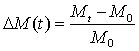
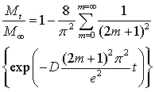
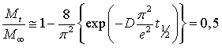
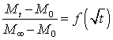
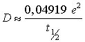

International Journal of Theoretical and Applied Nanotechnology (IJTAN)
ISSN: 1929-1248

Volume 1, Issue 1, Year 2012 - Pages 45-51
DOI: 10.11159/ijtan.2012.007
Swelling of Protective Gloves in Commercial TiO2 Nanoparticles Colloidal Solutions
Ludwig Vinches¹, Yousra Boulebnane¹, Gérald Perron¹, Stéphane Hallé¹, Patricia Dolez², Kevin J. Wilkinson³
¹École de Technologie Supérieure
1125 Williams, Montréal QC H3C 1P7 Canada
ludwig.vinches.1@ens.etsmtl.ca, stephane.halle@etsmtl.ca
²CTT Group
3000 rue Boullé, Saint-Hyacinthe QC J2S 1H9 Canada
³Dept. De chimie, Université de Montréal
C.P. 6128, succ. Centre-ville, Montréal QC H3C 3J7 Canada
Abstract - Titanium dioxide (TiO2) nanoparticles enter in the composition of numerous manufactured products such as sunscreens or paints for example and their use seems today inescapable. Some of them are delivered in colloidal solutions to reduce aerolization risks. However, elastomers used in the manufacture of protective gloves may be sensitive to the action of solvents employed as liquid carriers in these commercial nanoparticles solutions. Effects may involve the swelling of the polymer by the solvent. If the solvent emerges on the inner side of the protective glove, it may carry nanoparticles with it, thus facilitating their penetration through gloves. This work aims at studying the swelling of four elastomers used in protective gloves when immersed in TiO2 colloidal solutions as well as in technical and ultra-pure solvents corresponding to the liquid carriers used in the nanoparticles solutions. The study involves latex, neoprene, nitrile and butyl rubber gloves and three commercial TiO2 colloidal solutions in water, 1,2-propanediol and 1,2-ethanediol. The swelling behaviour was assessed by mass gain and length change measurements. It was observed that the studied solutions have a significant swelling effect on nitrile rubber, latex and neoprene. On the other hand, no effect was measured with butyl rubber. As revealed by the non-negligible swelling recorded even for short immersion times, a possibility exists for a liquid carrier-mediated penetration of TiO2 nanoparticles through these protective gloves. These results are in agreement with preliminary measurements showing by chemical analysis of sampling solutions a possible penetration of TiO2 nanoparticles through gloves when in colloidal solutions. This demonstrates that great care must be taken when selecting protective gloves for handling nanoparticles in solutions.
Keywords: Swelling, Colloidal solutions, Titanium dioxide nanoparticles, Protective gloves, Diffusion coefficient
© Copyright 2015 Authors This is an Open Access article published under the Creative Commons Attribution License terms. Unrestricted use, distribution, and reproduction in any medium are permitted, provided the original work is properly cited.
1. Introduction
Nanoparticles, particularly titanium dioxide nanoparticles (nTiO2), are increasingly present in several commercial products like paints, varnishes, sunscreens, etc. (Hervé-Bazin 2007; Robichaud et al. 2009). More and more studies caution about their likely harmful effects on health, especially for workers and researchers. For example, a small increase in the number of cancer among workers in contact with nTiO2 have been reported (C.C.H.S.T. 2007). Moreover, studies conducted on rats and mice, which were exposed to 250 nm TiO2 pigment and 20 nm nTiO2 instilled by intratracheal, recorded the occurrence of pulmonary effects (Höhr et al. 2002; Warheit et al. 2006; Warheit et al. 2007). The observed inflammatory response was higher with nTiO2.
Based on these results, the International Agency for Research on Cancer (I.A.R.C.) has classified nanosized titanium dioxide in 2B-group as possibly carcinogenic to humans (I.A.R.C. 2010). In response to this classification, several Health & Safety government agencies have recommended the application of the precautionary principle (Ostiguy et al. 2009; OECD 2010). One of their recommendations is the use of protective gloves against chemicals, even if no thorough scientific validation of their efficiency against nanoparticles has been made yet.
To reduce aerolization risks for safety purposes, an increasing number of manufacturers offer nanoparticles in solutions instead of powder (Bordere et al. 2011). However, as shown by Nohilé et al. (2008, 2010), elastomers used in protective gloves are sensitive to solvents and may sustain significant swelling as well as degradation. The swelling phenomenon can be quantified by measuring the polymer mass gain versus time, allowing the computation of solvent diffusion coefficient values (Perron et al. 2002).
The swelling behaviour of polymers in solvents has already been largely documented by Hansen solubility parameters and his HSPiP application (Hansen 2000). For example, Perron et al. measured the swelling of different protective glove materials in more than fifty solvents (Perron et al. 2002). For their part, Golanski et al. studied the diffusion of tritiated water through three elastomers used in protective gloves, nitrile rubber, latex and vinyl (Golanski et al. 2010). For all of them, water diffusion through the samples was recorded within five days or less. For nitrile rubber, a value of diffusion coefficient of about 5.10-12 m2/s was measured and 3.10-13 m2/s for latex.
Since solvents are used as liquid carriers in nanoparticles solutions, this raises the risk that they facilitate the passage of nanoparticles through protective gloves. As preliminary results have shown, a significant swelling of various protective glove materials in commercial nTiO2 solutions may occur (Dolez et al. (2010), Vinches et al. (2011)). For example, a 4% length change was observed for nitrile rubber after only 2 hours of immersion time in a commercial nTiO2 solution in water and a 35% mass gain was measured after 8 hours.
This paper provides a more in-depth study of the swelling effect of elastomer protective gloves - disposable nitrile rubber and latex, and non-supported neoprene and butyl rubber - in 15 nm nTiO2 commercial solutions.
2. Materials
2. 1. Elastomers
For this study, five models of protective gloves corresponding to four types of elastomers were used: two disposable nitrile rubber gloves to compare the effect of the thickness (Best Nitrile Care 3005-PFL, 100 μm thick and Best Nitrile Care 8005-PFL, 200 µm), disposable latex gloves (Ansell Conform® XT 69-318, 100 µm thick), non-supported neoprene gloves (Ansell Neoprene 29-865, 450 µm thick) and non-supported butyl rubber gloves (Best Butyl 878, 700 μm thick). Unless otherwise specified, nitrile rubber samples correspond to Best Nitrile Care 3005-PFL glove model.
2. 2. Commercial TiO2 Colloidal Solutions
Three types of nanoparticles solutions were selected for the swelling tests. They all contain 15 nm, anatase titanium dioxide nanoparticles. nTiO2 solutions in water (15 wt%) and 1,2-ethanediol (EG, 20 wt%) were obtained from Nanostructured & Amorphous Materials, Inc. (Houston, TX). A 20 wt% colloidal solution in 1,2-propanediol (PG) was purchased from MK Impex (Mississauga, ON). Particle sizes of 21 ± 2 nm (for nTiO2 in water) and 35 ± 3 nm (for nTiO2 in EG) were measured by fluorescence correlation spectrometry (FSC). The same analysis was not possible for nTiO2 in PG due to an incompatibility between the cell material and the colloidal solution liquid carrier.
2. 3. Technical Grade and Ultra-Pure Solvents
Technical grade and ultra-pure solvents corresponding to the commercial colloidal solution liquid carriers were also obtained for comparison purposes. The ultra-pure solvents are anhydrous 1,2-ethanediol (99.8 wt%) and reagent 1,2-propanediol (99.5 wt%) from Sigma Aldrich and HPLC water from Acros Organics. Technical solvents are 1,2-ethanediol and 1,2-propanediol (Fisher Chemicals), and laboratory-made distilled water.
3. Experimental Setup
Mass gain measurements were performed on 4 x 50 mm rectangular samples taken from the palm section of the gloves. To obtain statistically significant data, three replicates were produced for each test. The measurements were performed by immersing the samples in the commercial nTiO2 solutions or in technical/ultra-pure solvents. At regular intervals, samples were removed from the liquid, their surface gently wiped with a paper towel before being weighed using a precision balance (±0.1 mg). The mass gain was computed using the following expression:
|
 |
(1) |
With Mt being the mass at time t and M0 the corresponding value before immersion.
Using the data corresponding to the variation of the mass of the sample as a function of the immersion time, it is possible to estimate the corresponding value of diffusion coefficient. Indeed, according to Fick's first law, Eq. (2) was derived relating the ratio between the mass at time t and at infinite time (i.e. at maximum swelling) and mostly used (Perron et al. 2002):
|
 |
(2) |
With D the diffusion coefficient and e the sample thickness.
Eq. (2) can be simplified considering that the exponential term decreases quickly with m. A half-life time (t½) is obtained for a mass ratio equal to 0.5 as shown in Eq. (3):
|
 |
(3) |
The value of t½ is provided at (Mt - M0)/(M∞ - M0) = 1/2 by fitting the data expressed according to Eq. (4) by a linear regression. The diffusion coefficient is given by Eq. (5).
|
 |
(4) |
|
 |
(5) |
The experimental setup for length change measurements was the same as described for the mass gain measurements. However, in that case, the length of the sample was measured with a vernier calliper (± 0.01 mm). The length change ratio was computed using Eq. (1) by replacing mass data by length data.
4. Results and Discussion
4. 1. Analysis of the Colloidal Solutions by Infrared Spectroscopy
Colloidal solutions usually contain additives such as stabilizing agents which may affect the swelling phenomenon. A comparison of the nTiO2 solutions with the corresponding technical grade and ultra-high purity solvents was performed by infrared spectroscopy (FT-IR, Nicolet Continuum XL). Measurements were made in attenuated total reflectance (ATR) mode on drops of solutions after almost total evaporation of the solvent. As it can be observed in Fig 1, an additional peak appears at 1070 cm -1 for the nTiO2 solution in water compared to the spectrum of ultra-high purity water. This peak may be associated with the elongation of a CO bond. It might indicate the presence of an alcohol or ether used as additive in the nTiO2 solution. On the other hand, the spectra of colloidal solutions in EG or PG and the corresponding ultra-pure solvents do not disclose any significant difference. In these cases, spectra exhibit a complex structure which may explain the difficulty in detecting additional peaks associated with the presence of additives. Moreover, the characteristic peaks of these additives might be superimposed with those of the two glycols, thus preventing their detection.
4. 2. Swelling Measurements
Swelling measurements were carried out by recording the mass of glove material samples after 500 minutes (corresponding to a working day) of immersion in the nTiO2 solutions during. Fig 2 displays the mass gain recorded for nitrile rubber immersed in the nTiO2 solution in water. A steady increase is observed. The variation coefficient for the reported data is less than 1%. Swelling measurements were also conducted with the ultra-pure solvents corresponding to the nTiO2 solution liquid carriers to verify if that mass gain is not caused by an accumulation of nanoparticles in surface features of the samples (Dolez et al. 2010). The curves obtained for the nTiO2 solution in water and for ultra-high purity water superimpose perfectly as shown in Fig 2. This indicates that the recorded gain mass is solely attributable to the swelling of nitrile rubber by the colloidal solution liquid carrier, water in that case.
The measured mass gain for nitrile rubber samples immersed in the three nTiO2 solutions - in water, EG and PG - as a function of the immersion time is displayed in Fig 3-a. A gradual mass increase is observed for all colloidal solutions. The curves corresponding to nTiO2 solutions in EG and PG appear to overlap. This indicates a similar affinity of both colloidal solutions with nitrile rubber. It is probably due to the fact that the two liquid carriers belong to the same glycol chemical family. Indeed, solvent chemical family is one of the parameters controlling the swelling ratio of elastomers in solvents (Nohile et al. 2008).
Fig 3-a also shows that the swelling ratio of nitrile rubber in the nTiO2 solution in water is much higher compared to the two others. After 8 hours of immersion, it reaches a value of 35% for the nTiO2 solution in water while it is equal to 15% for nTiO2 in PG and EG. This discrepancy may be attributed to differences in viscosity, molecule size and structure, and polarity between the two solvent families. However, maximum swelling has not been reached for any of the nTiO2 solutions after 8 hours of immersion time.
In order to fully characterize the swelling behaviour of the four protective glove materials in the nTiO2 solutions in water, EG and PG, longer immersion times were used. Fig 3-b displays the variation of the mass gain of nitrile rubber, latex, neoprene and butyl rubber samples over 3 days when immersed in the nTiO2 solution in water. For nitrile rubber, latex and neoprene, a plateau in the swelling curves is observed after about 40 hours of immersion. The variation in mass gain is gradual and starts immediately at the beginning of the immersion in the nTiO2 solutions. This indicates a diffusion of chemical species in the polymer membrane. In the case of butyl rubber, no significant mass gain was recorded at all. Some differences in the swelling behaviour between nitrile rubber, latex and neoprene can also be observed. Indeed, the maximum mass gain for nitrile rubber has reached about 79% while its value is equal to 27% for latex and 18% for neoprene.
In Table 1, the maximum mass ratio values measured for the four glove materials and the three nTiO2 solutions are provided. For each nTiO2 solutions, the same tendency was observed for the three elastomers. Nitrile rubber swells more than latex which swells more than neoprene. No swelling of butyl rubber was observed in any of the three nTiO2 solutions.
Using Eq. 5 and the mass gain data, it is possible to estimate the diffusion coefficients of the three nTiO2 solutions (in water, PG and EG) for nitrile rubber, latex and neoprene. As can be seen in Table 2, the three nTiO2 liquid carriers diffuse more rapidly in neoprene than in latex and nitrile rubber. It can be attributed to the moderate resistance of neoprene to chemicals (Dolez et al. 2010). It should be noted that nitrile rubber and latex display similar values of diffusion coefficient. In terms of the three nTiO2 solutions, the nTiO2 solution in water diffuses faster than the nTiO2 solution in EG, which diffuses faster than the nTiO2 solution in PG. It must be noted that these values are quite lower than what can be measured with more efficient solvents (Perron et al. 2002).
Table 1. Values of maximal swelling ratio for the four glove materials in the three nTiO2 solutions.
|
Maximum mass change ratio (%) |
|||
|
|
nTiO2 in water |
nTiO2 in EG |
nTiO2 in PG |
|
Nitrile |
79 |
73 |
94 |
|
Latex |
27 |
14 |
26 |
|
Neoprene |
18 |
11 |
11 |
|
Butyl rubber |
0 |
0 |
0 |
Table 2. Diffusion coefficients of the three nTiO2 solutions in nitrile rubber, latex and neoprene obtained by mass gain.
|
Diffusion coefficients (10-14 m².s-1) |
||||
|
|
nTiO2 in water |
nTiO2 in EG |
nTiO2 in PG |
|
|
Nitrile |
1.6 |
0.5 |
0.7 |
|
|
Latex |
1.4 |
0.4 |
1.4 |
|
|
Neoprene |
10.4 |
1.5 |
6.9 |
|
|
Butyl rubber |
N/A |
N/A |
N/A |
|
4. 3. Length Change Measurements
The swelling of elastomers in nTiO2 solutions has also been characterized by measuring the variation in sample length. Fig 4.a displays the results in terms of length change ratio for nitrile rubber immersed in nTiO2 solution in EG and in ultra-pure EG. The standard deviation for the reported data is less than 1%. A gradual increase in sample length is recorded followed by a plateau. This result confirms the ability of nTiO2 solution liquid carriers to swell protective glove materials.
Since glycols are known to be highly hygroscopic, measurements were also performed with a mixture of PG and water of known concentration. Fig 4.b compares the variation in time of the length change ratio for nitrile rubber (model 8005-PFL) immersed in an equimolar mixture of ultra pure PG and ultra-high purity water, in ultra-high purity water and in ultra pure PG. In the case of ultra-high purity water and ultra-pure PG, the maxima in length change ratio are both equal to 9.5% but ultra-high purity water seems to diffuse faster than ultra-pure PG. Diffusion coefficient values computed from these data are equal to 2.1×10-14 m2/s for ultra-high purity water and 0.8×10-14 m2/s for ultra pure PG. For the equimolar mixture, a double plateau can be observed. The first plateau (around 6.5%) may be attributed to the water + PG mixture and the second one (at approximately 8%) could correspond to the diffusion of PG. These results show that great care must be taken during swelling tests to keep hygroscopic solvent-based colloidal anhydrous solutions.
4. 4. Implications for the Protection against Nanoparticles Exposure
As studied by Vinches et al. (submitted, July 2012), ICP-MS analyses of sampling solutions suggest the penetration of the nitrile gloves when they were subjected to dynamic mechanical deformations for periods of 5 hours or more (Fig 5). The swelling of gloves materials, in this case for nitrile rubber, is one of the phenomena which can facilitate the penetration of nTiO2 solutions through protective gloves (Vinches et al. 2012).
5. Conclusion
This paper has investigated the swelling of elastomers used in protective gloves in commercial nanoparticles solutions. Results in terms of mass gain and length change were obtained for four glove materials, nitrile rubber, neoprene, latex and butyl rubber, and three commercial TiO2 nanoparticles solutions in water, 1,2-ethanediol (EG) and 1,2-propanediol (PG). Tests were also performed with technical and ultra-pure solvents corresponding to the nanoparticle solution liquid carriers. Moreover, complementary analyses FT-IR of the colloidal solutions were also performed.
The studied solutions produce a significant swelling effect on nitrile rubber, latex and neoprene. A large mass gain was recorded for short immersion times (within a few hours), indicating a penetration of the nanoparticle liquid carrier in these elastomers. The highest values of diffusion coefficient were obtained for neoprene, which indicates its larger sensitivity to the three commercial nTiO2 solutions. On the other hand, no significant swelling of butyl rubber in any of the three colloidal solutions was recorded.
Length change measurements confirm the diffusion of chemical species in nitrile rubber, latex and neoprene samples when immersed in the commercial nanoparticles solutions. They also show a significant action of water mixed with glycols, which indicates that precaution must be taken when conducting swelling measurements in hygroscopic solvents.
These results show that great care must be exercised when selecting protective gloves for handling nanoparticles in solutions. Indeed, as the nanoparticles colloidal solution liquid carrier diffuses through the glove membrane, it may facilitate the transport of the nanoparticles through the protective glove and allow skin exposure. The next step is thus to measure if nanoparticles in solutions can cross protective gloves.
Acknowledgements
This project was conducted within the Research Chair in Protective Materials and Equipment for Occupational Safety and Health (École de technologie supérieure). It has been supported by the Institut Robert-Sauvé en santé et en sécurité du travail (IRSST), NanoQuébec, the Natural Sciences and Engineering Research Council of Canada, the Agence nationale de sécurité sanitaire de l'alimentation, de l'environnement et du travail, and the Agence de l'Environnement et de la Maîtrise de l'Energie. The authors would like to acknowledge the contribution of F. Deltombe, N. Testori (École de technologie supérieure) to the project.
References
Bordere, S., Corpart, J., El Bounia, N., Gaillard, P., Passade-Boupat, N., Piccione, P., Plée, D. (2011) Industrial production and applications of carbon nanotubes. Materials Design 28 :1477-1489. View Article
Dolez, P., Vinches, L., Wilkinson, K. J., Plamondon, P., Vu-Khanh, T. (2010) Development of a test method for protectives gloves against nanoparticles in conditions simulating occupational used. Journal of Physics:Conference series 304 012066. View Article
Golanski, L., Brouard, C., Motellier, S., Auger, A., Tardif, F. (2010) A new measurement method for polymeric membrane barriers and textile properties against nano hydrosols, application to gloves and protective clothings. Paper presented at the NanoSafe2010, Grenoble (France)
Hansen, C.M., (2000) Hansen solubility parameters : A user's Handbook, CRC Press, Boca Raton
Hervé-Bazin, B. (2007) Les nanoparticules: Un enjeu majeur pour la santé au travail ? EDP Sciences, Paris
Höhr, D., Steinfartz, Y., Schins, R. P. F., Knaapen, A. M., Martra, G., Fubini, B., Borm, P. J. A. (2002) The surface area rather than the surface coating determines the acute inflammatory response after instillation of fine and ultrafine TiO2 in the rat. International Journal of Hygiene and Environmental Health 205 (3):239-244. View Article
International Agency for Research on Cancer (2010) Monographs on the evaluation of carcinogenic risks to humans - carbon black, titanium dioxide and talc. World health organization, Lyon View Article
Nohilé, C., Dolez, P., Vu-Khanh, T. (2008) Parameters controlling the swelling of butyl rubber by solvents. Journal of Applied Polymer Science 110 (6):3926-3933. View Article
Nohilé, C., Dolez, P., Vu-Khanh, T. (2010) Mechanical and Chemical Effects of Solvent Swelling on Butyl Rubber. In: Proceedings of the 9th International Conference on Mesomechanics, Particle & continuum aspects of mesomechanics: integrity thresholds for materials and structures, Giens (France), pp 527-534. View Article
Organisation for Economic Co-operation and Development (2010) Current developments/activities on the safety of manufactured nanomaterials - Tour de table at the 7th meeting of the working party on manufactured nanomaterials. Series on the safety of manufactured nanomaterials, Paris (France) View Article
Ostiguy, C., Roberge, B., Woods, C., Soucy, B. (2009) Les nanoparticules de synthèse - Connaissances actuelles sur les risques et les mesures de prévention en SST, 2nd edn. Institut de recherche Robert-Sauvé en santé et en sécurité au travail, Montréal View Article
Perron, G., Desnoyers, J. E., Lara, J. (2002) Résistance des vêtements de protection aux mélanges de solvants industriels - Développement d'un outil de sélection. Institut de recherche Robert-Sauvé en santé et en sécurité au travail, Montréal (Canada) View Article
Robichaud, C., Emre Uyar A., Darby, M. R., Zucker, L. G., Wiesner, M. R. (2009) Estimates of upper bounds and trends in nTiO2 production as a basis for exposure assessment. Environmental Science and Technology 43(12):4227-4233. View Article
Vinches, L., Dolez, P., Vu-Khanh, T. (2011) Study on the penetration of TiO2 nanoparticles through nitrile and butyl protective gloves. In: Proceedings of the 2nd International Conference on Nanotechnology : Fundamentals and Applications, Ottawa (Canada)
Vinches, L., Testori, N., Dolez, P., Wilkinson, K.J., Hallé, S. (2012) Experimental evaluation of the penetration of Tio2 nanoparticles through protective clothing and gloves under conditions simulating occupational use, submitted in Journal of Experimental Nanoscience (July 2012).
Warheit, D. B., Webb, T. R., Reed, K. L., Frerichs, S., Sayes, C.M. (2007) Pulmonary toxicity study in rats with three forms of ultrafine-TiO2 particles: Differential responses related to surface properties. Toxicology 230 (1):90-104. View Article
Warheit, D. B., Webb, T. R., Sayes, C. M., Colvin, V. L., Reed, K. L. (2006) Pulmonary Instillation Studies with Nanoscale TiO2 Rods and Dots in Rats: Toxicity Is not Dependent upon Particle Size and Surface Area. Toxicological Sciences 91 (1):227-236. View Article
Website References
Centre Canadien d'Hygiène et de Sécurité au Travail (2007) Information de base sur le dioxyde de titane, Accessed 9 March 2007. View Website